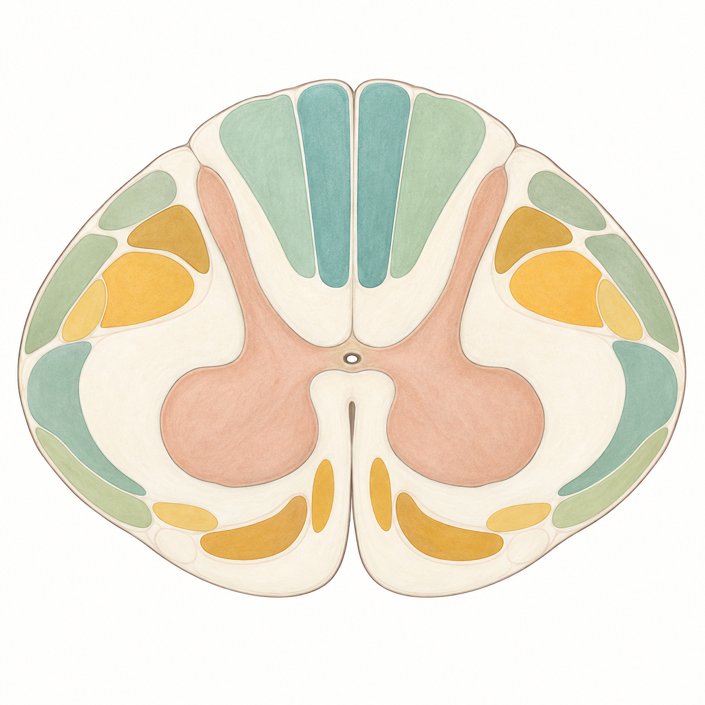

Regiones y nervios espinales
Selecciona una región para consultar su organización y sus conexiones.
Comparación esquemática, sin proporciones reales. Las líneas representan cada par de raíces; no son dermatomas ni un mapa para localizar una lesión.
MÉDULA / ATLAS INTERACTIVO
El navegador ha abierto el archivo directamente. Para cargar el corte, las fichas y el modelo 3D, utiliza el acceso que acompaña al atlas.
Si el atlas ya está iniciado, este botón te lleva a él. Si no responde, usa primero el acceso de doble clic.
NEUROANATOMÍA / MÉDULA ESPINAL
Explora la protección ósea y selecciona una vía en el corte transversal.
1. Localiza la médula dentro del canal. 2. Compara una vía sensitiva con una motora. 3. Relaciona el lugar del cruce con el lado del déficit.
Ilustración docente generada con IA. Textura artística; territorios de los tractos aproximados, sin escala física. Pueden solaparse en la anatomía real.

ANATOMÍA / DEL CONJUNTO A LAS CUBIERTAS
Explora las cinco regiones, sigue sus raíces y distingue las capas que protegen el tejido nervioso.
Ocho cervicales, doce torácicos, cinco lumbares, cinco sacros y uno coccígeo. Un segmento medular se define por sus raíces, no por una vértebra del mismo número. En el adulto, el cono suele terminar cerca del nivel vertebral L1–L2; por debajo continúan raíces y filum terminale.
Selecciona una región para consultar su organización y sus conexiones.
Comparación esquemática, sin proporciones reales. Las líneas representan cada par de raíces; no son dermatomas ni un mapa para localizar una lesión.
Selecciona una capa, una raíz o el ganglio. Posterior arriba, anterior abajo.
Ilustración docente generada con IA; textura artística, no histología. Posterior arriba y anterior abajo. Espesores ampliados, sin escala física ni asignación a un segmento concreto. Los puntos orientan la selección. El LCR ocupa el espacio subaracnoideo, entre aracnoides y piamadre. Ambos ramos del nervio son mixtos.
SUSTANCIA GRIS / DEL MAPA AL TEJIDO
Cambia de nivel medular, explora astas y láminas de Rexed, y compara después con histología.
Los cortes interactivos son esquemas de segmentos medulares humanos. Revisa la especie, el nivel y la técnica de cada preparación microscópica. Las imágenes animales complementan el estudio; una tinción muestra determinados componentes y no revela todas las conexiones.
NEUROPSICOLOCOS / SIMU-LAB
Explorar, contrastar y enseñar neurociencias.
La autoría y la licencia de cada imagen se indican junto al recurso. Las fuentes externas no implican una colaboración institucional con este proyecto.
Relaciona regiones, cubiertas, raíces y vías. Recibirás una explicación después de cada respuesta.
El corte representa un segmento medular torácico alto (T3), con fascículos grácil y cuneiforme. T3 designa aquí el segmento de médula, no la vértebra del mismo número. El modelo óseo utiliza las mallas de T2, T3 y T4 de BodyParts3D. La médula y los discos añadidos son esquemáticos; el corte docente no establece una correspondencia exacta entre vértebra y segmento.
Los colores y los límites de los tractos son recursos docentes. No son una segmentación histológica ni una reconstrucción de imagen médica. El modelo 3D añade meninges y dos salidas nerviosas bilaterales de forma esquemática; omite vasos, ligamentos y costillas. Las aperturas y los espesores de las cubiertas se amplían para estudiar su orden. El canal vertebral es el espacio óseo que aloja la médula; el conducto central es una estructura diferente, situada dentro de ella.
La sección Anatomía compara las cinco regiones medulares y las salidas de 31 pares de nervios. Las posiciones y longitudes del SVG son ilustrativas, no sirven para convertir un nivel vertebral en un segmento medular. Las raíces inferiores descienden formando la cola de caballo; la médula no se prolonga hasta el sacro. Las referencias aportadas se usaron como orientación visual, con la distinción entre siete vértebras cervicales y ocho pares de nervios cervicales.
Las cuatro láminas docentes fueron regeneradas con apoyo de IA a partir de referencias aportadas por el usuario. Se revisaron su orientación y relaciones generales. Los rótulos y controles se añadieron por separado; las bandas de la lámina de sustancia gris no son una delimitación exacta de las diez láminas de Rexed.
La sección Sustancia gris incluye un esquema con licencia abierta, histología comparativa de gato y enlaces a preparaciones de microscopía virtual. Cada recurso conserva su autoría y fuente, e indica su especie y técnica cuando están disponibles. El neuroarte de Greg Dunn y Brian Edwards se consulta en la web del autor.
Las mallas óseas proceden de BodyParts3D / Anatomography 4.3, © Database Center for Life Science (DBCLS), con licencia CC BY-SA 2.1 Japan. Se aplicaron una subdivisión suave, normales continuas, rotación de ejes y escala uniforme; se conserva la disposición relativa de las vértebras. Son modelos de atlas, no una tomografía de un paciente. Los grupos de selección del cuerpo, arco y apófisis son aproximados.
Fuentes del mapa consultadas el 2 de octubre de 2026; recursos de sustancia gris revisados el 3 de octubre de 2026. El atlas combina resúmenes docentes y recursos visuales con atribución.
TERRITORIO, VÍAS Y HALLAZGOS
Elige una zona del corte, resuelve el caso y compara las vías comprometidas y respetadas. Todos los casos son ficticios y usan el segmento medular T3 como referencia.
Posterior arriba. Derecha del sujeto a la izquierda de la imagen. El área coral representa un territorio docente aproximado.
Las vías y su explicación aparecerán al contestar. En modo docente puedes mostrarlas y ocultarlas.
Referencia de la actividad: segmento medular T3. Elige entre las cinco zonas del corte.
Simulación educativa por patrones. Las ilustraciones y zonas SVG son cualitativas; no son una segmentación histológica ni un modelo de diagnóstico, pronóstico o gravedad. Se destacan tres sistemas y el cruce comisural; otros circuitos y efectos autonómicos no se simulan. T3 es un segmento medular, no una equivalencia con la vértebra T3.